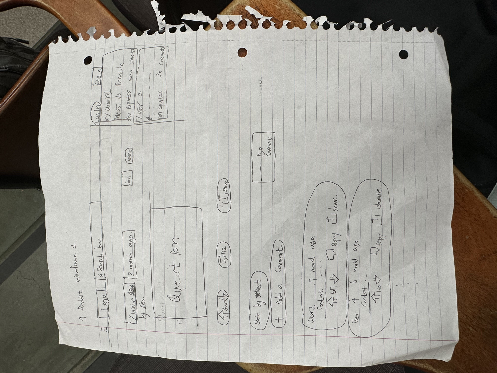

-
Using the favorite website you chose in homework 1, create a wireframe for one page of it using pen/paper, PowerPoint, or any your tool of choice. (use the 'img' tag!) Make sure to let us know what the name of your website is (Use the 'p' tag!)

Name of the website: Reddit
-
Try to improve the website you've chosen, and create a redesigned wireframe of one page for the same website using the principles of visual hierarchy that you learned from the article.

Applying the macro and micro level spacing.
-
What is the goal of the website? Who is it intended for? How does the design accomplish this? Write 2-3 sentences answering these questions. (Use the 'p' tag again!)
Reddit is a social news website and forum, and the goal of this webiste is to promote members to get the information or data from the related topics, This website is for the users based on their interests, determined by content they've recently interacted with, including Reddit communities. Macro level design spacing accomplish one of this element
-
Write 2-3 sentences about what problems your redesign addressed, and how it solved them.
Original has lots of empty spaces, unorganized section, and overuse of spacing(barren). In order to deal with this issue and being more clear, created downvote section to display the amounts of down and up votes. Removing the spaces that takes up a lot of spaces(barren).
NOTE: Make sure to include the wireframe images in the website and don't just put it in your assets folder!
Your wireframes should look something like this: